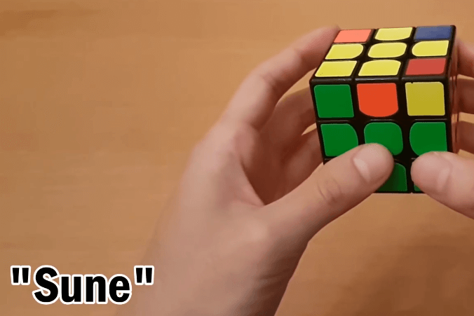
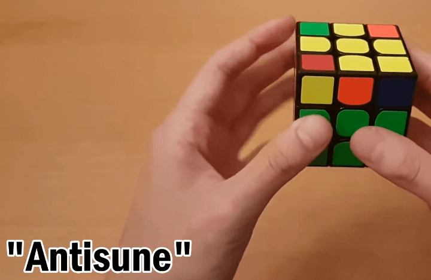

OLL

Line
F(R U R’ U’)F’

L-shape
f(R U R’ U’)f’

Dot
F(R U R’ U’)F’ f(R U R’ U’)f’

Sune
R U R' U R U2 R'

Antisune
L' U' L U' L' U2 L

Two Yellow Corners, Others Opposite
F(R U R' U')3 F'

Two Yellow Corners, Others Not Opposite
R U2(R2 U' R2 U' R2) U2 R

L
x(R' U R D') (R' U' R D)

Two Yellow Corners Opposite
x(L U R' U') (L' U R U')

Two Yellow Corners Adjacent